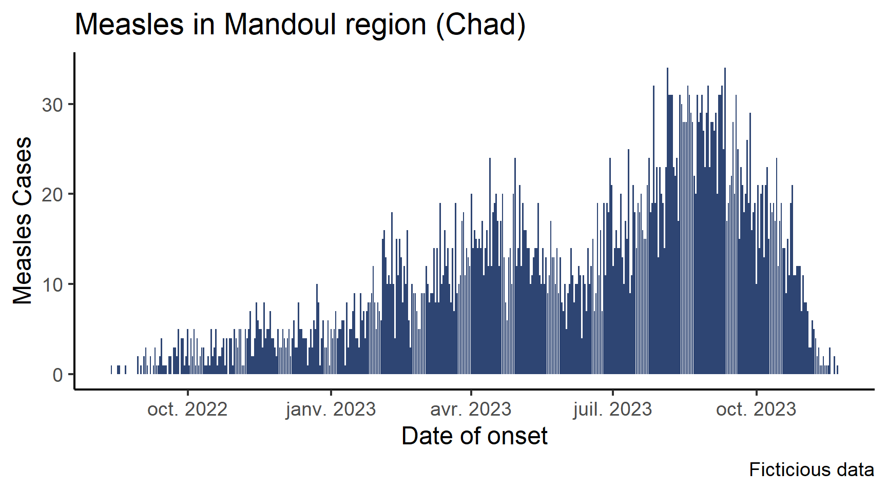
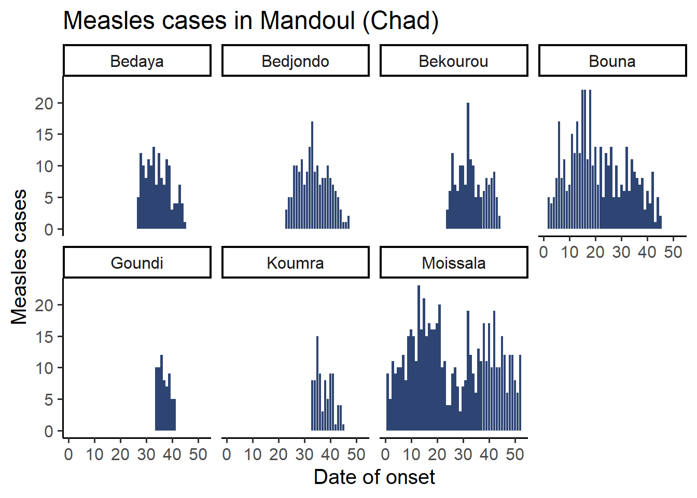
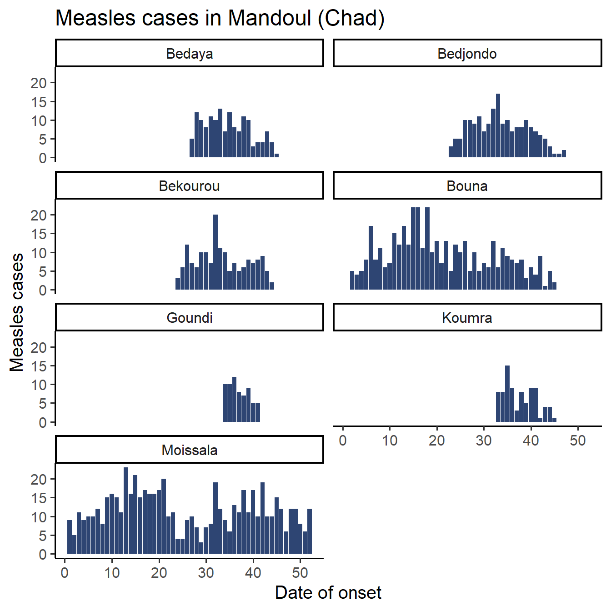
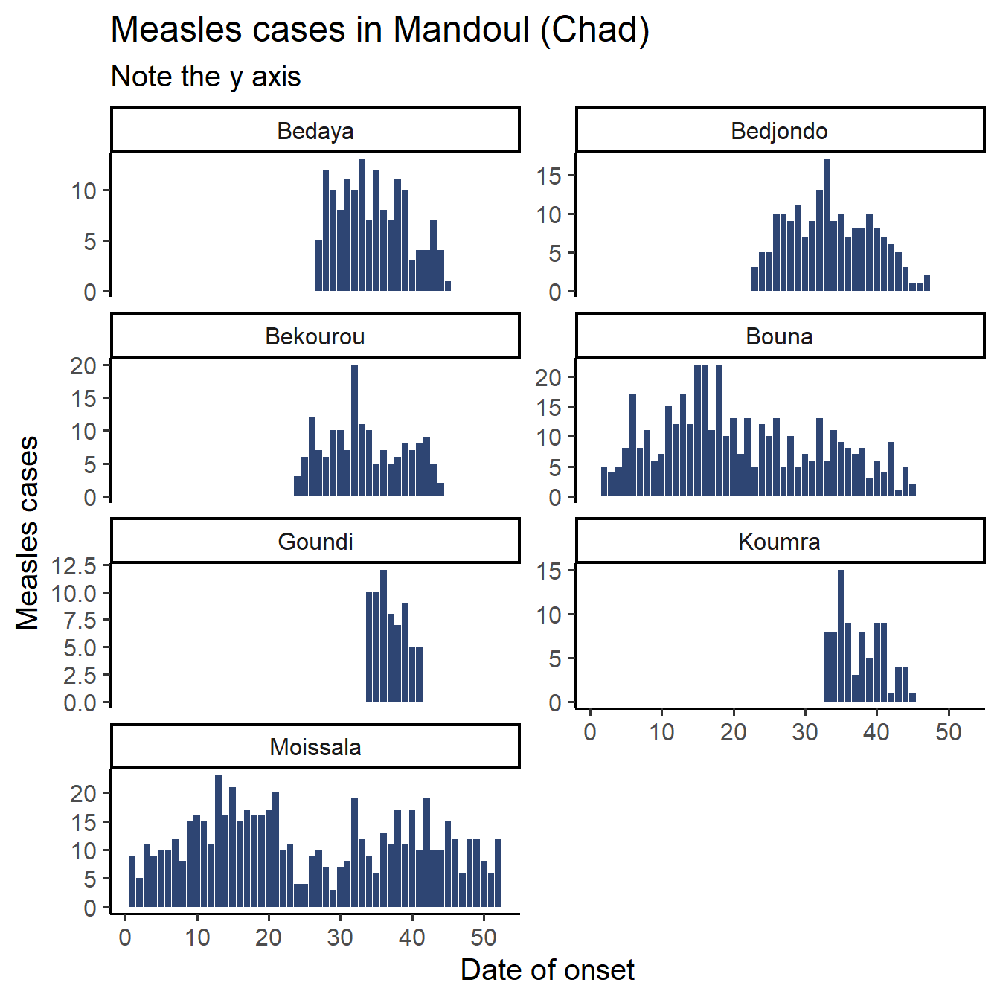
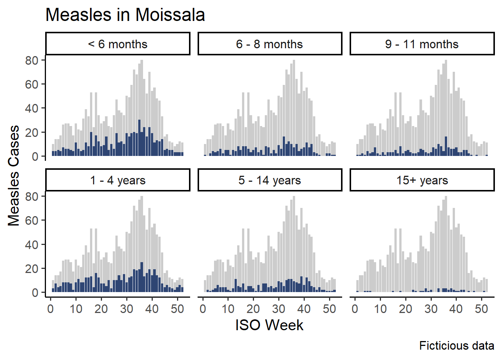
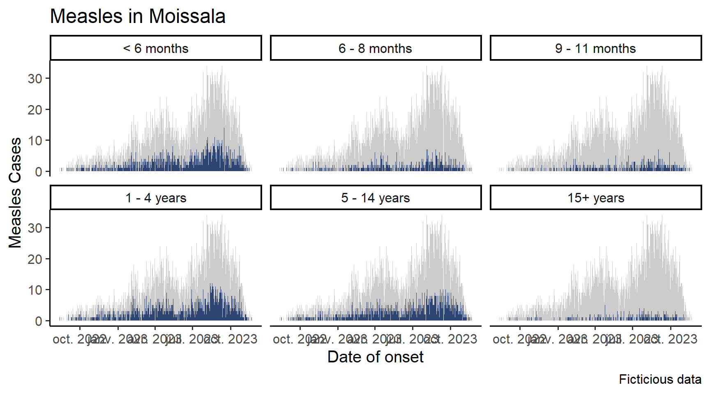

Introduction to facetting
Core
Graphs
ggplot2
epicurve
Create a plot with multiple subplots (facets)
Objectives
- Learn the syntax to make subplots real quick in
{ggplot2} - Learn arguments to modify the appearance of the subplots
Introduction
This satellite builds on the core epicurve session, which is a prerequisite. In that session, we learned how to create an epicurve of measles cases across time:
Now, this plot is cool, but in your sitrep you would like to show the data by age group. There are several ways to do that:
- You could, for each age group, filter your data frame and copy and paste the plotting command to create specific plots
- You could learn to use
forloops orapply()ormap()family functions, which are very useful ways to automatize actions, and involve less copy and pasting - Or you could trust
{ggplot2}to have a solution…
The first option is tedious and it is error prone, and we advise against it; learning the tools of the second option will be a good investment of you time at some point as they are really powerful, but they are way out of the scope of this tutorial because a much simpler option already exist in {ggplot2}.
Setup
Let’s get your data and script ready.
Open your RStudio project and create a new script called facetting.R with appropriate metadata. Alternatively, work in your epicurves.R script, in a new section.
In any case, make sure you load the following packages: {here}, {rio}, {dplyr}, {lubridate}, {ggplot2} and that you imported the clean dataset moissala_linelist_clean_EN.rds.
Facetting
The function facet_wrap() allows you to replicate a graph based on the categories of a variable. For example, you could make the epicurve graph by sex, or by site. As other layers of a ggplot graph, you add it to your existing graph with a +. It creates a a figure with multiple small graphs, that {ggplot2} calls facets or small multiples.
Get the Data Ready
In the following session, we will explain the code by creating subplots by sub-prefecture, and you will be plotting the epicurve by age group.
If we want to to plot anything by sub-prefecture, the sub_prefecture variable must be present in the aggregated data frame that we use to plot.
Let’s create a new summarized dataset that has the number of patients by day and by sub-prefecture!
df_pref <- df_linelist %>%
count(date_onset, sub_prefecture,
name = 'patients') date_onset sub_prefecture patients
1 2022-08-13 Moissala 1
2 2022-08-17 Moissala 1
3 2022-08-18 Moissala 1
4 2022-08-22 Moissala 1
5 2022-08-30 Moissala 2
6 2022-09-01 Moissala 1You will draw a plot of the number of admissions by age group, so you need a new data frame summarized by week and age group. Create this data frame, and call it df_age. It should have this format:
Add the Facet Layer to the Plot
Now, let’s plot this data. Look at the code bellow: it is exactly the same as before but for the last line, which creates the facets:
df_pref %>%
ggplot(aes(x = date_onset,
y = patients)) +
geom_col(fill = "#2E4573") +
labs(x = "Date of onset",
y = "Measles cases",
title = 'Measles cases in Mandoul (Chad)') +
theme_classic(base_size = 15) +
facet_wrap(vars(sub_prefecture)) # Make the plot by sub-prefecture!
Isn’t that incredible? As you can see, the function facer_wrap() takes as argument a variable name wrapped in the vars() function.
Now is your turn, draw the epicurve by age group (still keeping all the plots improvement: labels, themes etc.)
Customize Facets
Check out the function help page to learn about the arguments that facet_wrap() accepts. We will cover a couple here.
Number of Rows or Columns
The arguments nrow and ncol allow you to decide how many facets there should be on one row, respectively one column.
For exemple, we could have all plots on two rows, for a wide figure:
df_pref %>%
ggplot(aes(x = date_onset,
y = patients)) +
geom_col(fill = "#2E4573") +
labs(x = "Date of onset",
y = "Measles cases",
title = 'Measles cases in Mandoul (Chad)') +
theme_classic(base_size = 15) +
facet_wrap(vars(sub_prefecture),
nrow = 2) 
Or force the number of rows to four, which forces a taller figure:
df_pref %>%
ggplot(aes(x = date_onset,
y = patients)) +
geom_col(fill = "#2E4573") +
labs(x = "Date of onset",
y = "Measles cases",
title = 'Measles cases in Mandoul (Chad)') +
theme_classic(base_size = 15) +
facet_wrap(vars(sub_prefecture),
nrow = 4) 
Using one of the mentioned argument, create a graph with three columns.
Axis Ranges
Did you notice that in the graph we produced, all facets share the same axis in x and y? This is often a desired feature, as playing with axes is one of the best ways to mislead readers.
That being said, if you are more interesting in seeing the shape of the epicurve by category and less by comparing categories to each other, zooming on the available data can be appropriate (alert your reader to the scale variation though!)
The scales argument accepts the following strings:
"fixed": the default, same limits on x and y for all facets"free_x": the x axis may have different limits in different facets"free_y": the y axis may have different limits in different facets"free": both axis may vary in different facets
Look at this graph:

We kept time window on the x axis fixed but allowed the y axis to vary to better read the number of cases by sub-prefecture.
Your turn! Draw you graph with age group as facets with a free y axis, and a fixed x axis.
Done!
Very well done team! You have learned how to facet plots! This will work not only on bar plots such as epicurves, but also on other types of plots made by {ggplot2}.
Depending on the size of your graph, the date labels on the x-axis may be a bit messed up, the ones in my exemples definitly are. Fear not, this can be controlled and is the object of another satellite!
Challenge
The help pages from {tidyverse} packages tend to be well written. We advise you to go and read them when you learn a new function, you are bound to learn a couple of tricks each time.
Important
Reading code written by others, figuring out what it does and then adapting it to your own code are very important skills to develop, whether the code comes from the official documentation, StakOverflow, tutorials from random people on the web or Large Language Models outputs (such as Github Copilot, or ChatGPT).
Here is an exercise to train these skills. Checkout the examples of the help page for the facet_wrap() function: one of them show how to adapt your code to do this:

Can you modify your code do do something similar?
Tip
You will need two aggregated data frames, one created today and one created in the epicurve session.